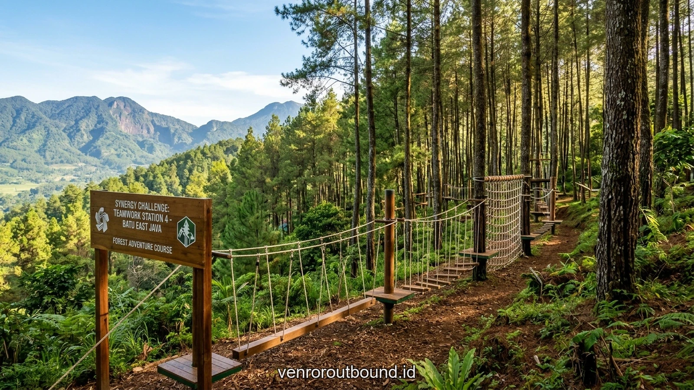

Sinergi Tim 2026
11 Menit

Strategi Sinergi Inter-Departemen Tanpa Stres: Solusi Efektif Membangun Resilience Tim
Panduan aplikatif meruntuhkan sekat formal birokrasi antardivisi dan membangun empati kolaboratif melalui simulasi luar ruang berbasis experiential learning di Batu Malang.